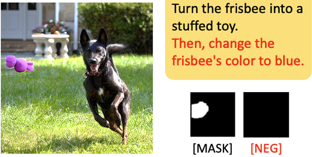
Staff AI/ML Engineer, Samsung Semiconductor US
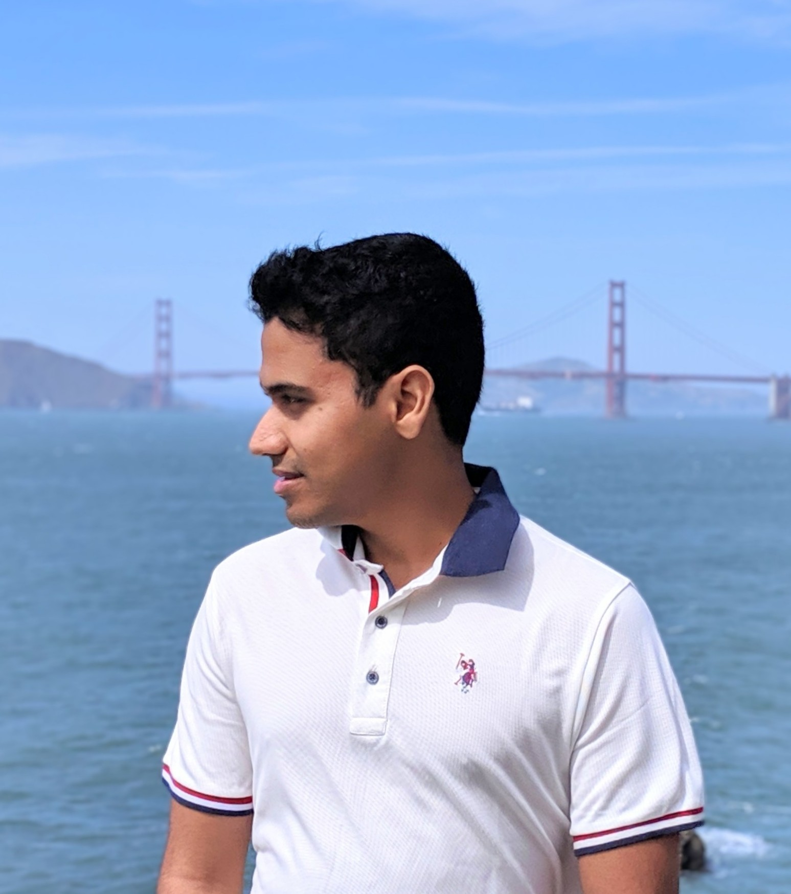
I am Srikanth Malla, currently leading initiatives as a Staff AI ML Engineer at Samsung Semiconductor US. My journey in tech began with roles at Honda Research Institute (HRI), USA, and Kinetic Automation, where I focused on research and development in Computer Vision and Machine Learning. My passion lies in the realm of intelligent robotics; I am driven by the vision of creating robots that coexist and assist humans, enhancing our everyday life. My academic foundation includes a Master's in Robotics Engineering from Worcester Polytechnic Institute (WPI), obtained in September 2018. Beyond my professional endeavors, I delve into projects that range from self-driving car technologies to deep learning applications, constantly seeking innovative ways to apply my skills in AI and machine learning to solve real-world problems.
Contact: srikanth.m@samsung.com

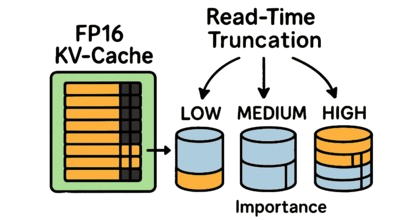
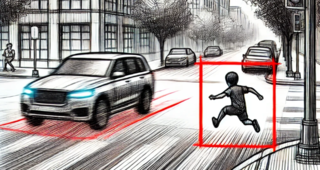
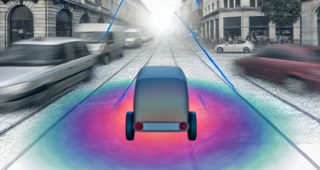
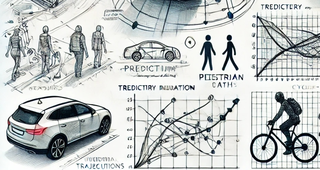
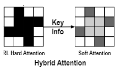
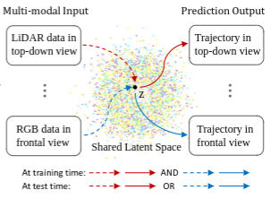
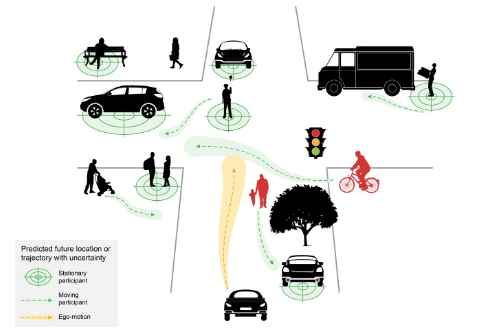
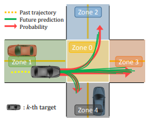
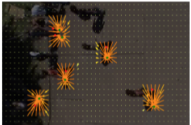
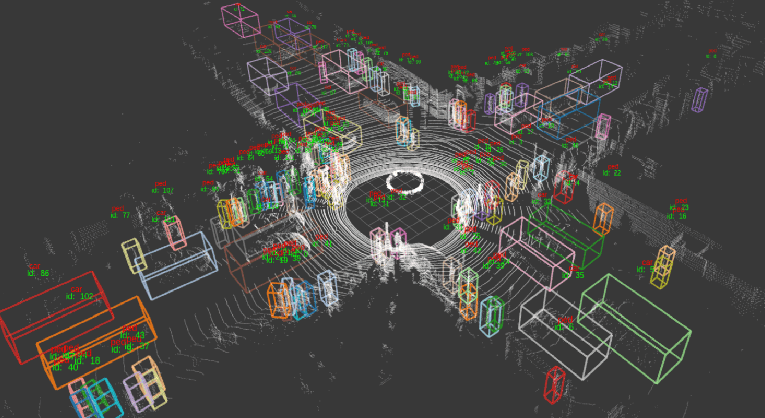
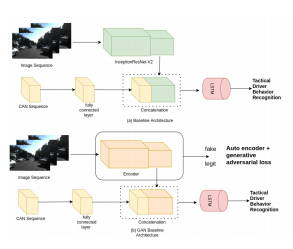
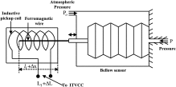